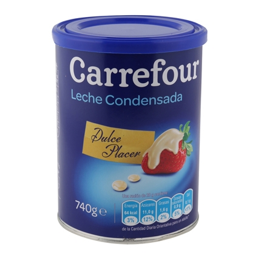
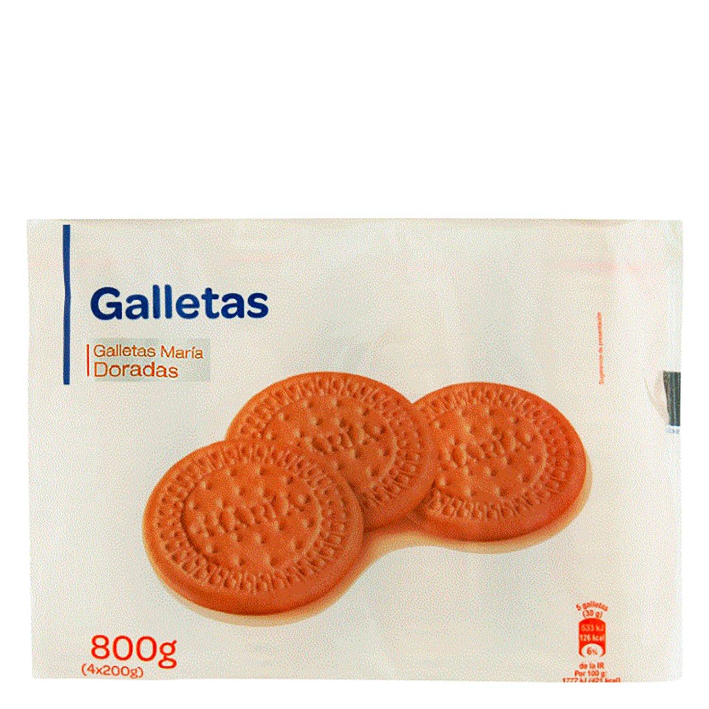
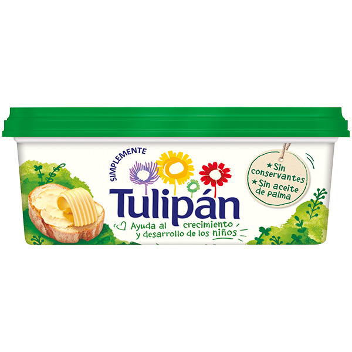

360gr leche condensada
50gr de galletas maria
1/4 tazá de juego de limón
1 1/2 cucharadas de de margarina
triturar los 200gr de galleta maria y agregar a un bol,luego de que tienes las galletas en el bol agregar una cucharada y media de margarina al bol con las galletas marias y mezclar hasta que quede homogenea la mezcla, vertir sobre un molde , amasar y compactar para que sirva de base.
vamos con el relleno: vertir sobre un bol los 360gr de leche condensada agregar el jugo de limon y mezlcar con suavidad hasta que la mezcla quede homogenea, vertir sobre el molde con la base de galleta y guardar en el refrigerador hasta que cuaje